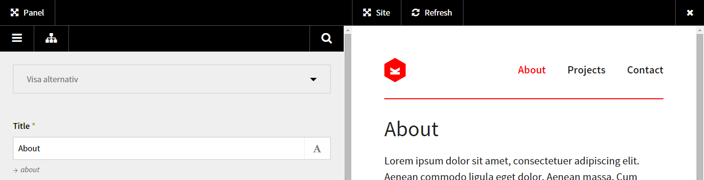
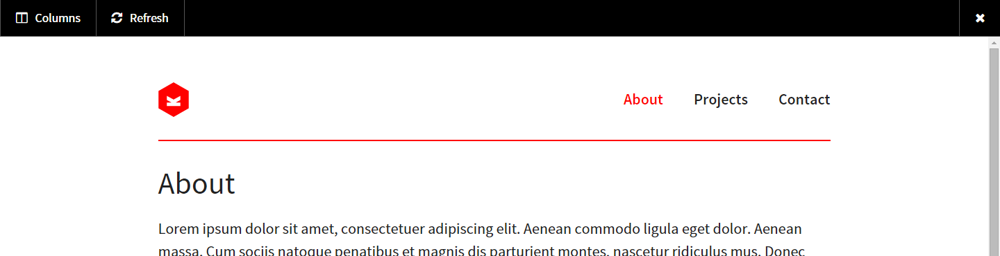
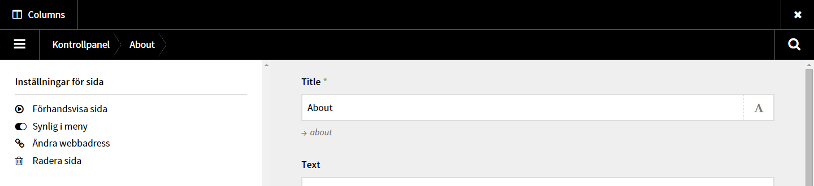

Splitview makes it possible to edit your pages in a splitscreen view. See what you change directly after pressing save.

splitview folder in /plugins/<?php echo splitview(); ?> right before </body> in your footer of all your pages.alt + s to activate the Splitbar.There are two columns, panel and site. Panel is the Kirby panel and site is your frontend. You can make each column expand to full width.


If options are not set a default value will be used.
To trigger Splitview alt + s is used as a default keyboard shortcut. You can change the s letter if you want.
Default: s
c::set('splitview.key', 's');
You can disable Splitview without removing the plugin. Set this option to false to disable it.
Default: true
c::set('splitview.active', true);
There is currently no way to add your custom CSS or JS through the plugin, but you can disable it if you want. Set this option to false disable it.
Warning: If you disable these option the Splitview will probably not work like expected.
Default: true
c::set('splitview.css', true);
c::set('splitview.js', true);
Splitview does not work well on mobile devices because the screen is too narrow. Don't even try it.
<!-- Splitview # Start --> in your source. If it's not there, the plugin does not run.If problem remains, add an issue and describe as good as you can what does not work.
What breaks? Flood me with issues.
Ideas are always welcome. Add them as issues.
Help to improve the code with pull requests or suggestions as issues.
Possuble future ideas is added to the issues tagged ideas or features. Also look at milestones.